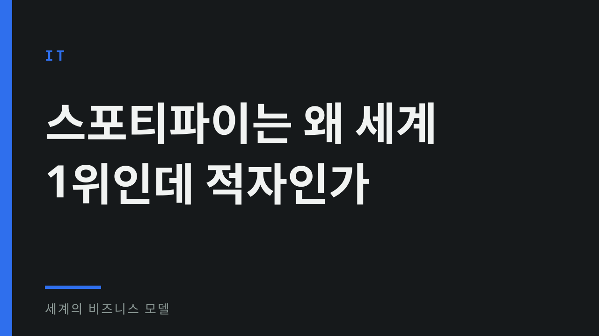
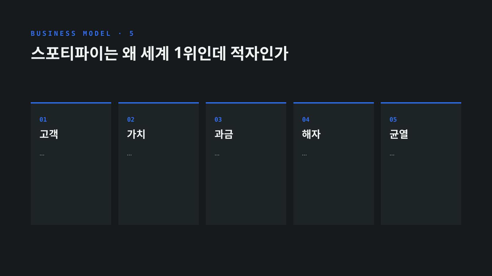
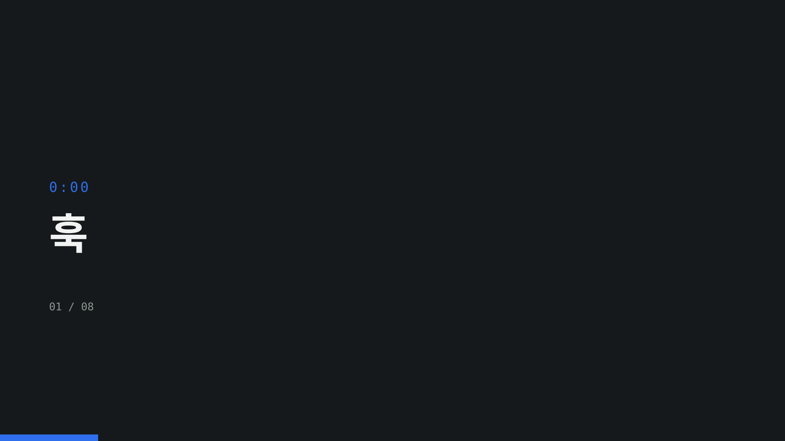
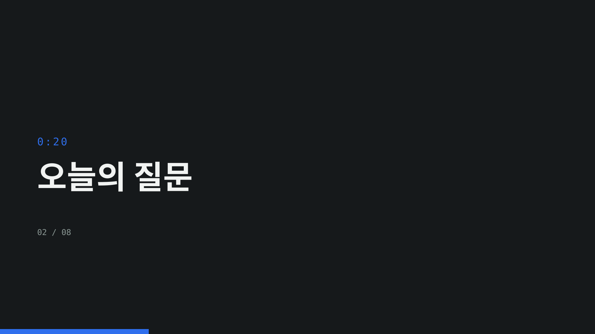
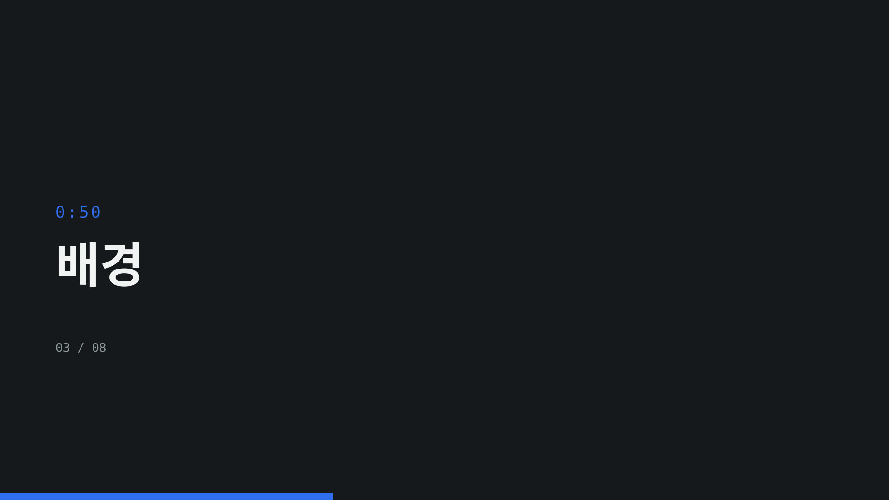
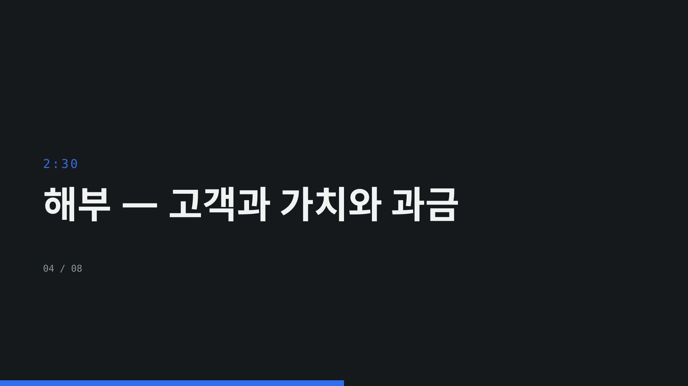
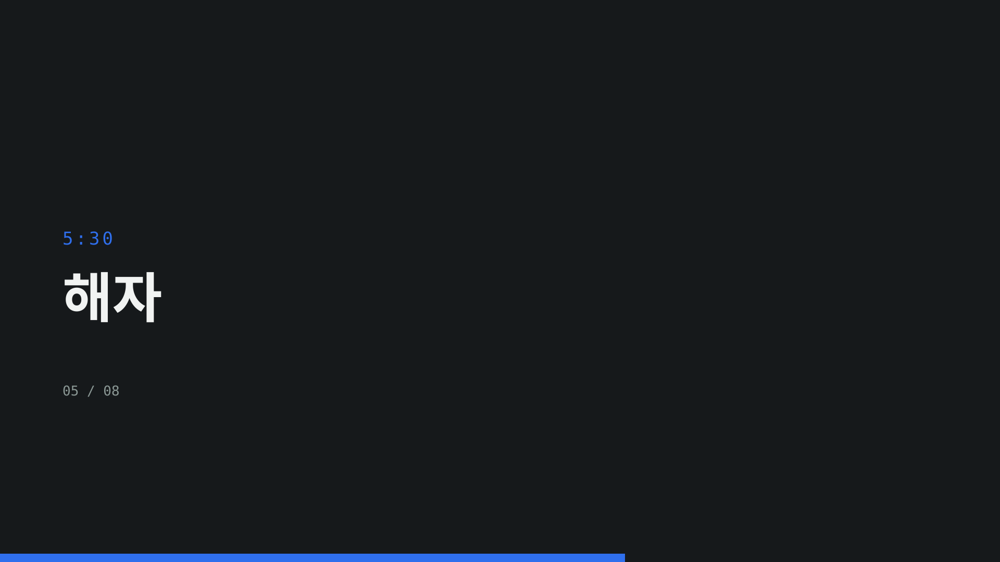
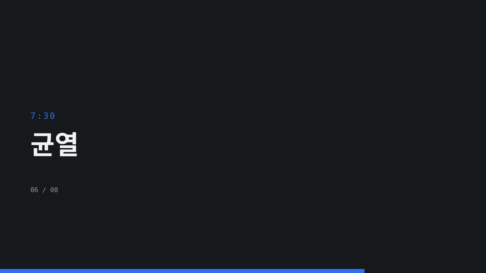
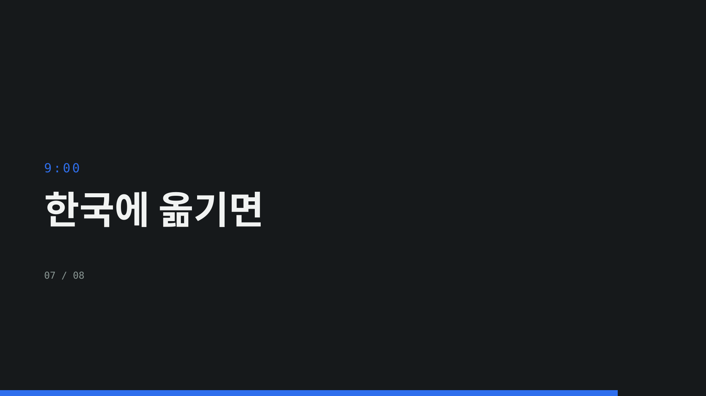
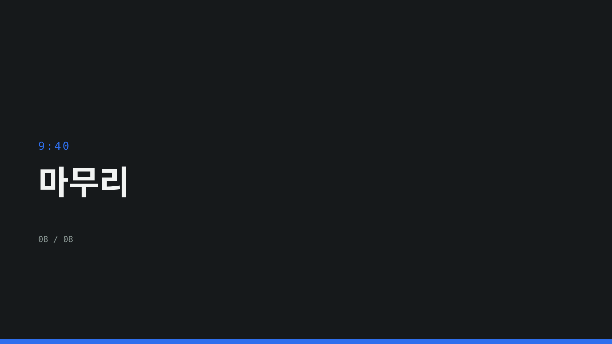

스포티파이는 왜 세계 1위인데 적자인가
IT · 2026-08-26 · 브라우저에서 이미지를 우클릭해 저장하면 PNG 로 쓸 수 있다
thumbnail.svg
frames.svg
chapters/01-훅.svg
chapters/02-오늘의-질문.svg
chapters/03-배경.svg
chapters/04-해부-고객과-가치와-과금.svg
chapters/05-해자.svg
chapters/06-균열.svg
chapters/07-한국에-옮기면.svg
chapters/08-마무리.svg